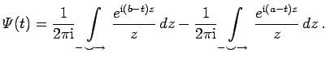

Inhalt Index DeskTop Bronstein

 Funktionentheorie Berechnung reeller Integrale durch Integration im Komplexen Anwendungen des Lemmas von Jordan Beispiele zum Lemma von Jordan
Funktionentheorie Berechnung reeller Integrale durch Integration im Komplexen Anwendungen des Lemmas von Jordan Beispiele zum Lemma von Jordan


Ein weiteres Beispiel für die Anwendung des Hakenintegrals ist die Darstellung des Rechteckimpulses:
 |
(14.61a) |
|  | (14.61b) |